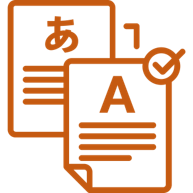
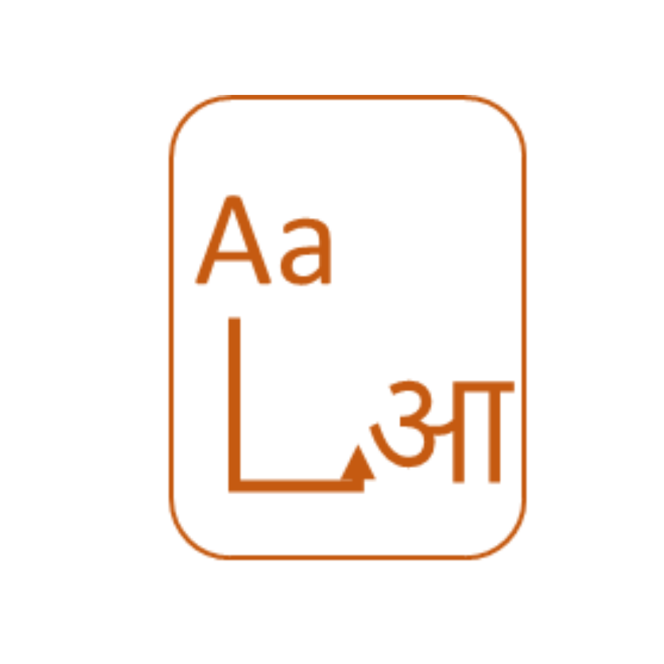

AI4Bharat has pioneered the development of multilingual LLMs tailored for Indian languages,
such as IndicBERT, IndicBART, and Airavata trained on extensive, diverse datasets like
IndicCorpora and Sangraha.

Our machine translation models, including IndicTransv2, are built on large-scale datasets
mined from the web and carefully curated human translations, catering to all 22 Indian
languages and competing with commercial models as validated on multiple benchmarks.

AI4Bharat’s transliteration models, like IndicXlit, are optimized for converting text
between scripts of Indian languages and English, leveraging large scale datasets such as
Aksharantar
Our ASR models, including IndicWav2Vec and IndicWhisper, are trained on rich datasets like
Kathbath, Shrutilipi and IndicVoices, covering multiple Indian languages.
AI4Bharat’s TTS efforts, exemplified by AI4BTTS, focus on creating natural-sounding
synthetic voices for Indian languages using a mix of web-crawled data and carefully curated
datasets like Rasa.
We are in the early stages of developing models and datasets for advancing Document Layout
Parsing and OCR technologies to support the wide range of Indian scripts.